Arithmetic codes are pretty useful for compression.
There are a number of implementations available online, typically employing the equivalent of a categorical distribution over a finite domain. For example, using a probability table over the alphabet comensurate with common English text, each letter gets a section of the unit interval proportional to its frequency:
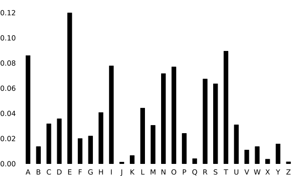
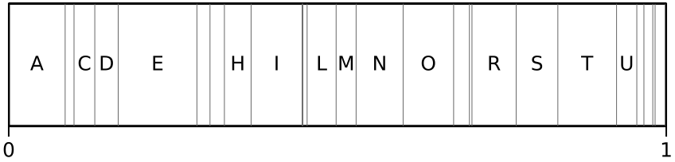
But any probability distribution with a well defined quantile function could be used for arithmetic coding, even on infinite domains. For instance, a Gaussian prior over integers could be used to compress whole numbers:
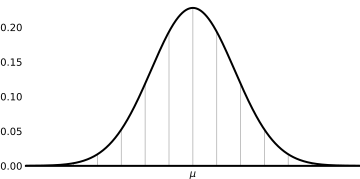
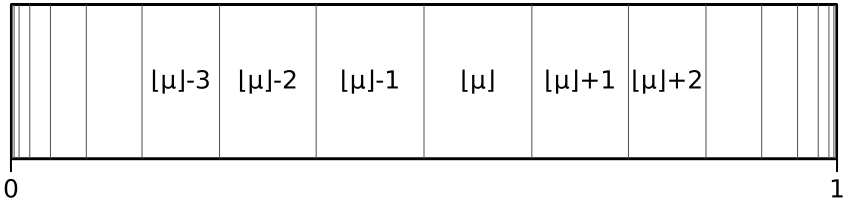
Each integer \(i \in \mathbb{Z}\) is assigned the probability mass contained within the interval \(i \pm 0.5\) on the Gaussian of choice.
Viability
PDF as a Estimator for Probability
The code length achievable by an arithmetic encoder is within two bits of the information content of the encoded message, which is the sum of the individual information content of the constituent symbols. The information content of a symbol is inversely related to its probability:
\[I(x) = -\log P(x)\]
The probability we assign each integer is the probability mass within the bounds \(x \pm 0.5\) of the \(PDF\) (the probability density funtcion, pictured above). This is computed as
\[\begin{align}P(x) &= CDF(x)|_{x-0.5}^{x+0.5}\\[6pt] &= CDF(x+0.5) - CDF(x-0.5)\end{align}\]
in terms of the Gaussian \(CDF\) (the cummulative distribution function), which, for a normal \(\mathcal{N}(\mu,\sigma^2)\) is equal to:
\[CDF(x) = \frac {1}{2}\left[1+\operatorname {erf} \left({\frac {x-\mu }{\sigma {\sqrt {2}}}}\right)\right]\]
which is expressed in terms of the non-elementary, sigmoid, error function “erf” which doesn’t factor or reduce well enough to be useful going further.
Conveniently, however, the \(PDF\) already approximates the \(CDF(x)|_{x-0.5}^{x+0.5}\) on grounds that the \(CDF\) is the integral of the \(PDF\):
\[PDF(x) = \lim_{h\to 0} \frac{CDF(x)|_{x-h/2}^{x+h/2}}{h}\]
which is just a statement of the fundamental theorem of calculus. Practically speaking, this means the \(PDF\) approximates the interval-\(CDF\), especially when the variance is at least 1 (here \(\mu = 0, \sigma = 1\)):
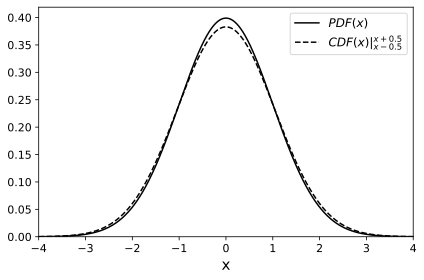
and as the variance approaches 0, our probability function flattens relative to the \(PDF\) (here \(\sigma \in \{ 0.8^i\) | \(i \in \{0,1,2,...\} \}\) and both axes are scaled to keep the \(PDF\) at the same place):
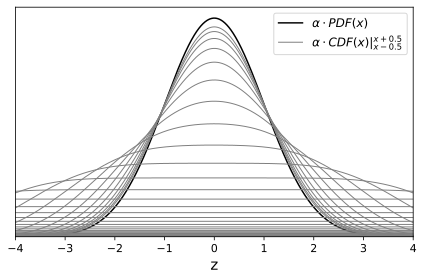
with sigmoid-shaped steps, where the \(\pm 0.5\) interval crosses into and out of the actual \(PDF\):
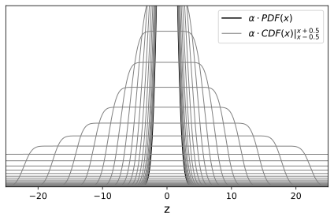
meaning that either \(PDF\) is a good estimator for \(CDF(x)|_{x-0.5}^{x+0.5}\) when \(\sigma \geq 1\) or it underestimates the probability in the tails (even beyond the sigmoid steps) when \(\sigma < 1\). In either case I argue it works as a good “worst-case”.
This is convenient because the \(PDF\) doesn’t contain special functions:
\[PDF(x) = \frac{1}{\sqrt {2\pi \sigma ^{2}}}e^{-{\frac {(x-\mu )^{2}}{2\sigma ^{2}}}}\]
We use the \(PDF\) to explore the information content of different data sets w.r.t. their MLE (maximum likelihood estimator), i.e. the Gaussian with mean and variance equal to the mean and variance of the data.
Re-parametrization of Gaussian MLE’s
The Gaussian MLE of a set of \(n\) values \(\{x_0, x_1, x_2, ...\}\) has parameters:
\[\mu = \frac{\sum x}{n} ~~~~~~~~~~~~ \sigma^2 = \frac{\sum (x - \mu)^2}{n}\]
Another formulation of variance (which also happens to be the more numerically stable) is:
\[\sigma^2 = \frac{\sum x^2}{n} - \frac{(\sum x)^2}{n^2}\]
or simply:
\[\mu = \frac{s_1}{s_0} ~~~~~~~~~~~~ \sigma^2 = \frac{s_2}{s_0} - \frac{(s_1)^2}{(s_0)^2}\]
where the only parameters are sums of the values raised to a power:
\[s_i = \sum{x^i} ~~~~~~~~~~~~ i \in \{0,1,2\}\]
Modeling the Information of Data Sets
With this formulation we can model the probability density at the outlier by setting the majority at \(0\) and the outlier at \(1\) (by invariance, this is representative of any outlier case modulo a constant factor):
\[\begin{array}{|l|c|c|c|} \hline \text{Population} & s_0 & s_1 & s_2 \\ \hline \{0,1\} & 2 & 1 & 1 \\ \hline \{0,0,1\} & 3 & 1 & 1 \\ \hline \{0,0,0,1\} & 4 & 1 & 1 \\ \hline \{0,0,...,0,1\} & n & 1 & 1 \\ \hline \end{array}\]
Then we have \(s_1 = s_2 = 1\). We substitute \(\mu\) and \(\sigma^2\) in the PDF to get a function of \(n\):
\[\begin{align} \mathrm{pdf}(x) &= \frac {1}{\sqrt {2\pi \sigma^{2}}}e^{-{\frac {(x-\mu )^{2}}{2\sigma ^{2}}}}\\ \mathrm{pdf}(1) &= \frac{1}{\sqrt {\frac{2\pi}{n} - \frac{2\pi}{n^2}}}e^{-\frac{(n-1)^2}{2n-2}} \end{align}\]
Which looks like
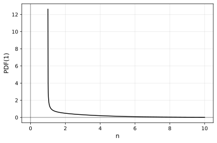
which drops pretty quickly (exponentially quickly), but code length only grows in one over the logarithm of the probability so:
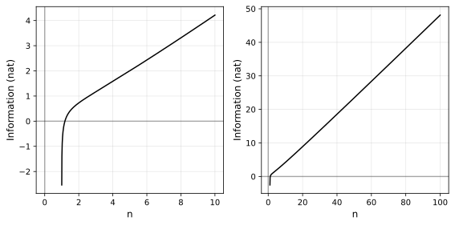
Which is a pretty unambiguous \(0.5n\) towards infinity.
So it looks like the code length of the outlier of a Gaussian only grows in \(O(n)\) of the size of the data set, which is only as bad as the performance of the uniform distribution of fixed-length codes.
Now, a full account of the performance of the distribution also has to take into account the code lengths of non-outliers, although we only expect their likelihood to grow with increasing \(n\) compared to the outlier. For completeness, computing the sum of code lengths using proper probability intervals (not density) on the CDF, with bin size \(\pm 0.5\) around integers, in base 2, we show the total code length also achieves linear size w.r.t. \(n\) in this outlier “worst case”:
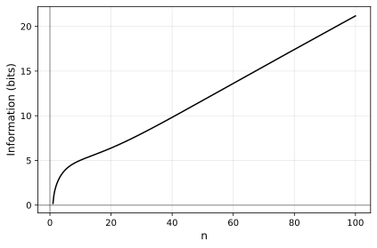
An Abstract Arithmetic Coding Interface
An implementation of arithmetic coding that works with any model is more abstract than what you typically find online. Here is my implementation in Rust:
Traits are defined for a “model” that emits “distributions” which are
repeatedly truncated at cumulative probabilites \(\in (0,1)\) until it
resolves to a specific symbol \(s\):i64 which is fed back to the
“model”, updating it, before requesting the next “distribution”.
Through defining a limited interface:
type Index = i64;
pub trait Model<T> {
fn next_distr(&mut self) -> Box<dyn UnivariateDistribution>;
fn push(&mut self, s: Index) -> Option<T>;
}pub trait UnivariateDistribution {
fn truncated(&self) -> Box<dyn TruncatedDistribution>;
}pub trait TruncatedDistribution {
fn quantile(&self, cp: f64) -> (Index, f64); // returns (s, s_rem)
fn truncate(&mut self, cp: f64, s: Index, s_rem: f64, bit: bool);
fn lo(&self) -> Index; // symbol the lower-bound is in
fn hi(&self) -> Index; // symbol the upper-bound is in
fn is_resolved(&self) -> bool { self.lo() == self.hi() }
}the algorithm handles the composition (i.e. nesting) of distributions in the code-space, with interfaces for serialization and de-serialization of values.
An implementation for categorical distributions is defined for a typical use-case of arithmetic coding.
Gaussian Implementation
Tackling Numerical Instability
The quantile function for Gaussians is continuous, one-to-one, monotone and has finite value everywhere except at \(0 \mapsto -\infty\) and \(1 \mapsto \infty\).
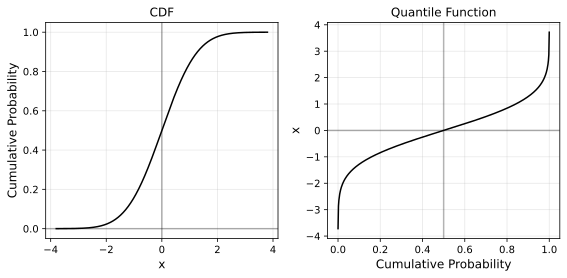
For our application, what’s important is that repeatedly splitting in
half an interval of the probability mass down to any symbol to encode
happens with constant progress (i.e. the middle of any interval cannot
be equal to either boundaries) and no overflow to any infinity. This
reflects on the CDF and quantile by requiring the following: any two
bounds \(a,b\) such that \(0<a<b<1\) and where both bounds are not already
within the bounds of a symbol, then the middle point quantile(cdf(a) + 0.5*(cdf(b) - cdf(a))) must be strictly greater than a and strictly
less than b. If it is not, encoding becomes impossible.
An easy measure to ensure progress might be to fall back to linear interpolation whenever the call to the quantile function runs out of precision, assuming local linearity. While this is a reasonable approximation in the central bulk of the distribution, it fails in the tails.
To see why, consider the PDF and its derivative:
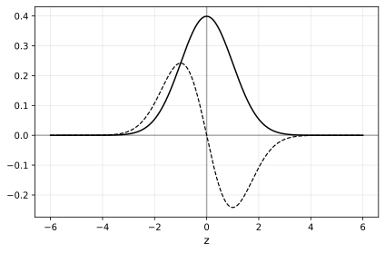
While both flatten out at the tails, for any given interval in the tails, the relative difference becomes greater the further away you move from the center. To see this, normalize the (absolute) derivative to the value of the function:
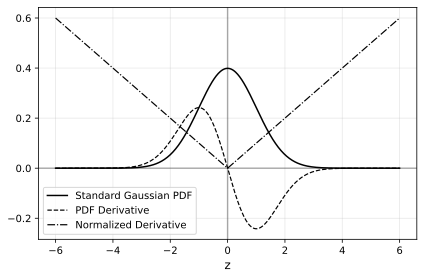
That is, the tails may be flat in absolute terms, but they become steeper relative to themselves the further away you go. Another way to demonstrate this is by blowing up the PDF at different scales (here, successive factors of 10):
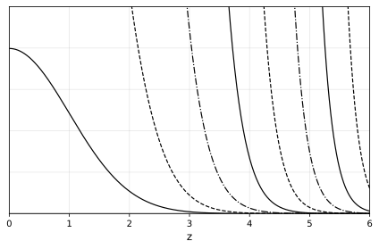
which makes it more clear why we cannot rely on linear interpolations in the tails. We are forced to find an analytic or at least numeric solution that is more faithful to the distribution.
Tackling Numerical Instability (for real)
Like is usually the case in probability, the solution to numerical instability is found in the log-domain. This gives us two analogous functions for the cumulative probability with more manageable shapes:
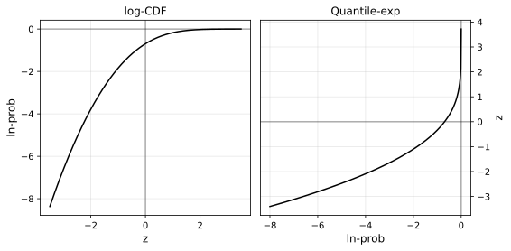
Furthermore, we can model all right tail calculations by using the left’s and avoid all asymptotes by exploiting the symmetry of the Gaussian PDF. This leaves us with two almost linear curves.
Fortunately, we are not the first to reach this point of the
journey. SciPy has well documented and precise polynomial approximations
of the log-CDF
log_ndtr
(source)
and quantile-exp
ndtri_exp
(source). This
affords us the precise interpolations on the probability mass of the
Gaussian we require, at least for now.
Examples
For the examples below, information content is calculated as the sum of the \(\log_2\)-probabilities of each integer in the distribution. The expected code length is that value rounded up. Code length is the empirical result. All codes decode back to the encoded values.
Degenerate Case
Integer sets with a single value produce empty codes:
Set: [0]
Model: Gaussian { μ: 0, σ: 0 } (1, 0, 0)
Information Content: 0 bits
Expected code length: 0 bits
Code: ''
Code length: 0 bits
Analysis: +0 bits (+0.0%) compared to expected
Decoding successful
Set: [1]
Model: Gaussian { μ: 1, σ: 0 } (1, 1, 1)
Information Content: 0 bits
Expected code length: 0 bits
Code: ''
Code length: 0 bits
Analysis: +0 bits (+0.0%) compared to expected
Decoding successful
Set: [8, 8, 8, 8, 8, 8, 8, 8, 8, 8, 8, 8]
Model: Gaussian { μ: 8, σ: 0 } (12, 96, 768)
Information Content: 0 bits
Expected code length: 0 bits
Code: ''
Code length: 0 bits
Analysis: +0 bits (+0.0%) compared to expected
Decoding successfulSmall Sets
Small symmetric sets produce consistently optimal codes:
Set: [-1, 1]
Model: Gaussian { μ: 0, σ: 1 } (2, 0, 2)
Information Content: 4.0970591008090445 bits
Expected code length: 5 bits
Information Contributions (bits): [2.05, 2.05]
Code: '01010'
Code length: 5 bits
Analysis: +0 bits (+0.0%) compared to expected
Decoding successful
Set: [-1234, 1234]
Model: Gaussian { μ: 0, σ: 1234 } (2, 0, 3045512)
Information Content: 24.632444528661186 bits
Expected code length: 25 bits
Information Contributions (bits): [12.32, 12.32]
Code: '0010100010100110000100000'
Code length: 25 bits
Analysis: +0 bits (+0.0%) compared to expected
Decoding successful
Set: [1, 0, -1]
Model: Gaussian { μ: 0, σ: 0.816496580927726 } (3, 0, 2)
Information Content: 5.274689097597744 bits
Expected code length: 6 bits
Information Contributions (bits): [2.08, 1.12, 2.08]
Code: '111000'
Code length: 6 bits
Analysis: +0 bits (+0.0%) compared to expected
Decoding successfulOutlier Case
Outlier cases like this one (\(n = 10\)):
Set: [0, 0, 0, 0, 0, 0, 0, 0, 0, 1]
Model: Gaussian { μ: 0.1, σ: 0.3 } (10, 1, 1)
Information Content: 5.0256952907839185 bits
Expected code length: 6 bits
Information Contributions (bits): [0.17, 0.17, 0.17, 0.17, 0.17, 0.17, 0.17, 0.17, 0.17, 3.45]
Code: '1001110'
Code length: 7 bits
Analysis: +1 bits (+16.7%) compared to expected
Decoding successfulare generated between \(n = 1\) and \(n = 100\), reproducing the plot from an earlier section:
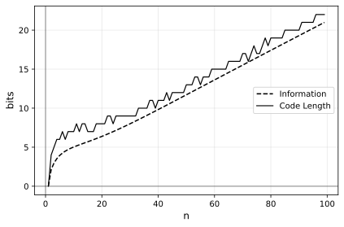
which is not optimal everywhere, but good enough.
Random Samples
The error becomes less noticeable as we move to sets containing more information. Here we sample \(n\) elements from a uniform distribution between -5 and 5, once for each \(n\):
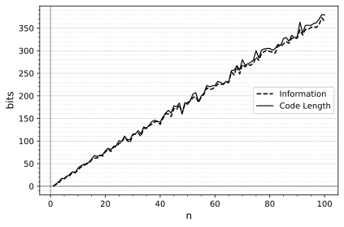
Seemingly identical performance is obtained when sampling from a normal distribution with the same variance \((\sigma^2 = \frac{10^2}{12} = 8.\overline{3})\):
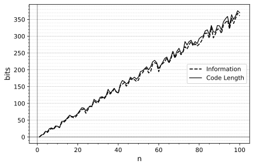
Sampling from any wider distribution produces code lengths closer to the information content than is visually distinguishable.